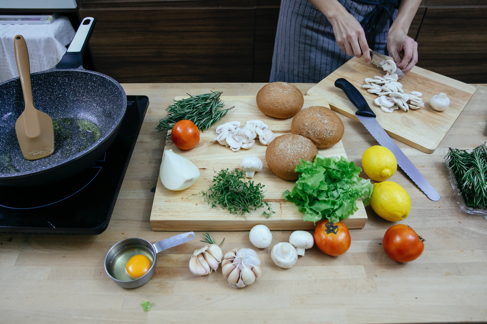

Receta de papas fritas
Esta es una receta para unas deliciosas papas fritas
Ingredientes
- 1Kg de Papas
- 1/2litro de Aceite
- Sal al gusto
Preparacion
- Lavar y pelar las papas
- Cortalas en bastones
- Calentar el aceite
- Freir las papas hasta tener un tono dorado
- Servirlas utilizando poca sal

Ver video de Preparacion